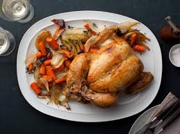

Whole Roasted Chicken

Description
Ina Garten’s Perfect Roast chicken is so moist and flavorful no wonder why people love this chicken so much! It’s seasoned with some fresh lemon, thyme, and garlic. I never would have thought that just stuffing some aromatics like this inside a chicken would make a chicken taste so good.
Ingredients
- 1 (5 to 6 pound) Roasting Chicken
- Kosher Salt
- Freshly ground black pepper
- 1 large bunch thyme
- 1 lemon, halved
- 1 head garlic, cut in half crosswise
- 2 tablespooons butter, melted
- 1 large, yellow onion, thickly sliced
- 4 carrots cut into 2-inch chunks
- 1 bulb fennel, tops removed, and cut into wedges
- Olive oil
Steps
- Preheat the oven to 425 degrees F.
- Remove the chicken giblets. Rinse the chicken inside and out. Remove any excess fat and leftover pin feathers and pat the outside dry. Liberally salt and pepper the inside of the chicken. Stuff the cavity with the bunch of thyme, both halves of lemon, and all the garlic. Brush the outside of the chicken with the butter and sprinkle again with salt and pepper. Tie the legs together with kitchen string and tuck the wing tips under the body of the chicken. Place the onions, carrots, and fennel in a roasting pan. Toss with salt, pepper, 20 sprigs of thyme, and olive oil. Spread around the bottom of the roasting pan and place the chicken on top.
- Roast the chicken for 1 1/2 hours, or until the juices run clear when you cut between a leg and thigh. Remove the chicken and vegetables to a platter and cover with aluminum foil for about 20 minutes. Slice the chicken onto a platter and serve it with the vegetables.